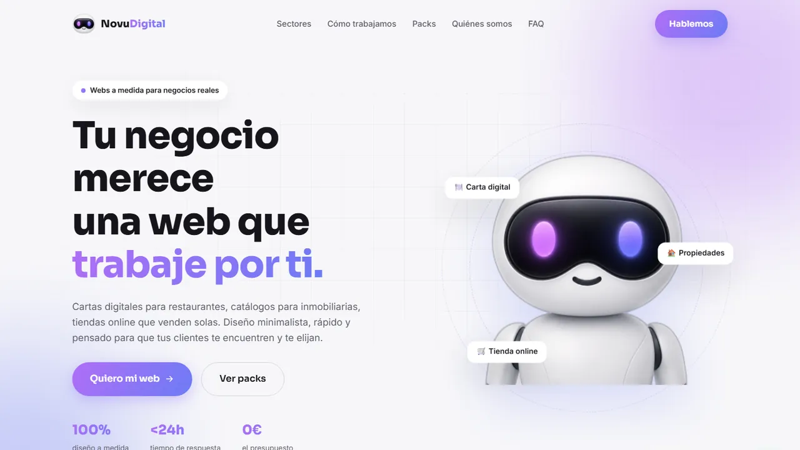

Todos los proyectos
NovuDigital
NovuDigital es mi estudio de webs para pequeños negocios: cartas digitales para restaurantes, catálogos para inmobiliarias y tiendas online. Diseñé y programé su web de presentación desde cero.

La idea
Muchos negocios pequeños, como el bar del barrio o la inmobiliaria de la zona, siguen sin web o tienen una que no les trae clientes.
NovuDigital nace para ofrecerles webs a medida con un proceso sencillo y trato directo. Lo primero que hacía falta era su propia web.
Qué hice yo
- Una sola página con sectores, proceso de trabajo, packs, quiénes somos y preguntas frecuentes.
- HTML, CSS y JavaScript sin frameworks, para que cargue rápido también con mala cobertura.
- Pensada primero para móvil, que es desde donde llega la mayoría de visitas.
- Contacto por WhatsApp: cada botón abre la conversación con el mensaje ya escrito.
- Identidad propia: nombre, colores y una mascota para la marca.
Lo que aprendí
- Escribir para quien no sabe de tecnología: frases cortas y ninguna palabra técnica.
- Ordenar una página para que lleve a una sola acción: escribir por WhatsApp.
- Cuidar el rendimiento y el diseño en móvil desde el primer día, no al final.
Domótica